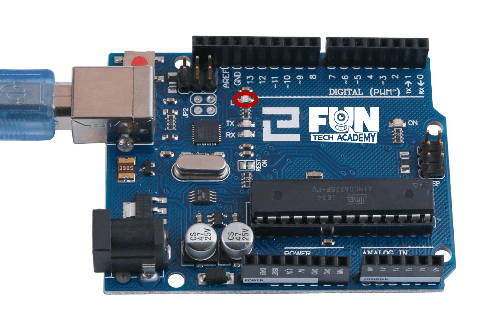
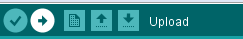

En este tema, aprenderemos a cómo programar la placa de Arduino para hacer parpadear el LED integrado de la placa y cómo descargar programas básicos.
(1) x Placa Arduino
La placa de Arduino UNO tiene unas filas de conectores a ambos lados que se utilizan para conectar varios dispositivos electrónicos y otras placas que amplían su capacidad. También tiene un indicador luminoso que podemos controlar. Este LED está construido sobre la placa de Arduino y se refiere a menudo como 'L' de LED ya que es como se indica en la placa.

Podemos encontrar que la 'L' de la placa de Arduino parpadea cuando se conecta a un enchufe USB. Esto es
porque las placas tienen grabado generalmente el programa de 'Blink' pre-instalado. Puede suceder que no lo
tengan.
En este tema vamos a reprogramar la placa de Arduino con nuestra propia versión de Blink y luego cambiar
la tasa a la que parpadea.
El IDE de Arduino incluye una gran colección de programas de ejemplo que se pueden cargar y usar. Esto
incluye un directorio de ejemplo para hacer el parpadeo del LED de 'L'.
Cargar el ejemplo de 'Blink' que encontrarás en el sistema de menús del IDE bajo
archivo > ejemplos > 01 conceptos básicos > Blink.
Se cargará el programa mostrando el script correspondiente, como se muestra en la imagen.
Los scripts de ejemplo incluidos con el IDE de Arduino son de sólo lectura. Es decir, puedes
subirlos a la placa de Arduino, pero si se cambia el contenido del script, no se puede guardar como el
archivo mismo (sobrescribirlo).
Puesto que vamos a cambiar este script, lo primero que tienes que hacer crear una copia para poder
manipularla sin problemas.
En el menú archivo en el IDE , selecciona 'Guardar como.' y guarda el programa con el nombre
'MyBlink'
Una vez guardado, si alguna vez queremos encontrar otra vez nuestro script, podemos simplemente abrir usando archivo > Open recent y buscando en la lista el nombre de nuestro archivo.
Conectamos la placa de Arduino al ordenador con el cable USB y comprobamos que la Board Type y Puerto serie están ajustados correctamente.
El tipo de tarjeta y puerto Serial aquí no son necesariamente la misma que se muestra en la imagen. Si usas 2560, entonces tendrás que elegir Mega 2560 como el tipo de Junta, otras opciones se pueden hacer de la misma manera. Y el puerto Serial para todo el mundo es diferente, a pesar de COM 26 elegido aquí, sería COM3 o COM4 en su ordenador. Un puerto COM correcto se supone que es COMX (arduino XXX), que es por los criterios de certificación.
Hacemos clic en el botón Subir. El segundo botón de la izquierda en la barra de herramientas.

Si vemos el área de estado del IDE, veremos una barra de progreso y una serie de mensajes. Al principio, que dice 'Compilando script...'. Esto convierte el script en un formato adecuado para subir a la placa.
La primera línea de código es:
int led = 13;
Como explica el comentario sobre ella, se le esta dando un nombre al pin que el LED está conectado. Este pin es el numero 13 y es ese pin en la mayoría de modelos de arduino. A continuación, tenemos la función de configuración. Otra vez, como dice el comentario, este se ejecuta cuando se presiona el botón de reset. También se ejecuta cada vez que la placa se reinicia por alguna razón o después de que un programa se haya subido
void setup( )
{
pinMode(led, OUTPUT); // Inicializa el pin digital como salida.
}
Cada script Arduino debe tener una función de configuración, y el lugar donde van las
instrucciones es dentro de las llaves { y }.
En este caso, es un comando, que, como dice el comentario, le dice a la placa Arduino que vamos a utilizar el
pin LED como salida.
La función loop, después de que haya terminado de ejecutar sus comandos, empezar
inmediatamente otra vez.
void loop( )
{
digitalWrite(led, HIGH); // Encienda el LED (nivel de voltaje alto)
delay(1000); // Esperar un segundo
digitalWrite(led, LOW); // Apagar el LED (nivel de tensión baja)
delay(1000); // Esperar un segundo
}
Dentro de la función del bucle, los comandos en primer lugar activan el pin del LED (HIGH), esperan un tiempo de 1000 milisegundos (1 segundo), para a continuación apagar el LED y esperar otro segundo antes de volver a empezar el bucle.
Ahora vamos a ver que debemos cambiar para que la transición ente el encendido y el apagado sea mas rápida. ¿Se te ocurre cómo?